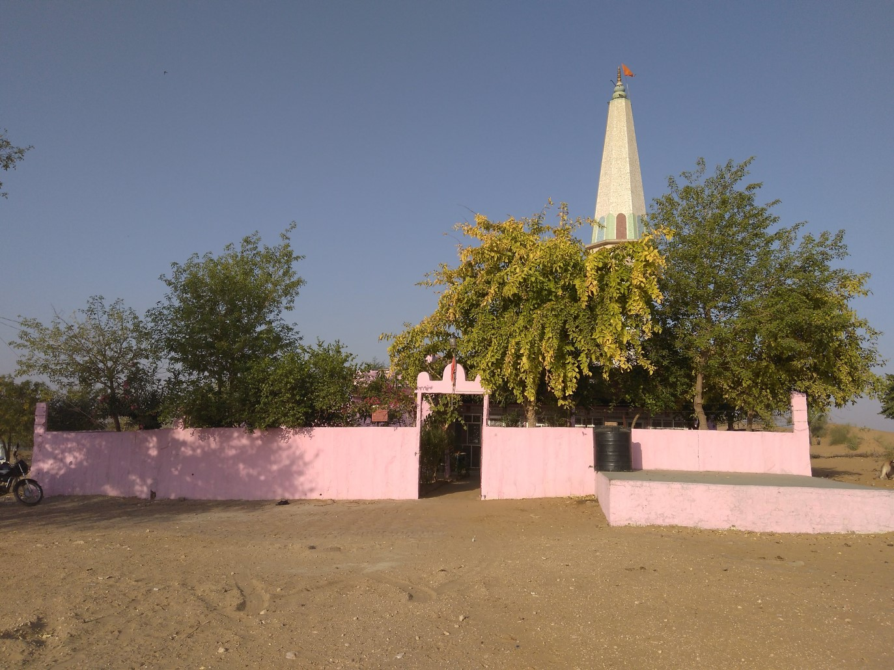
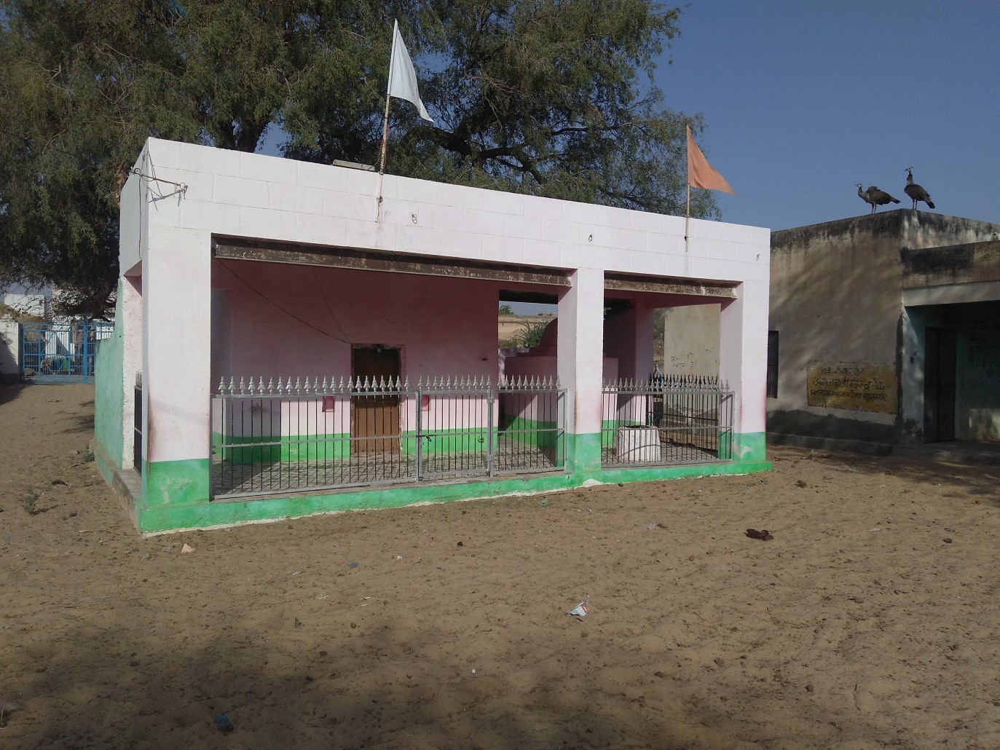
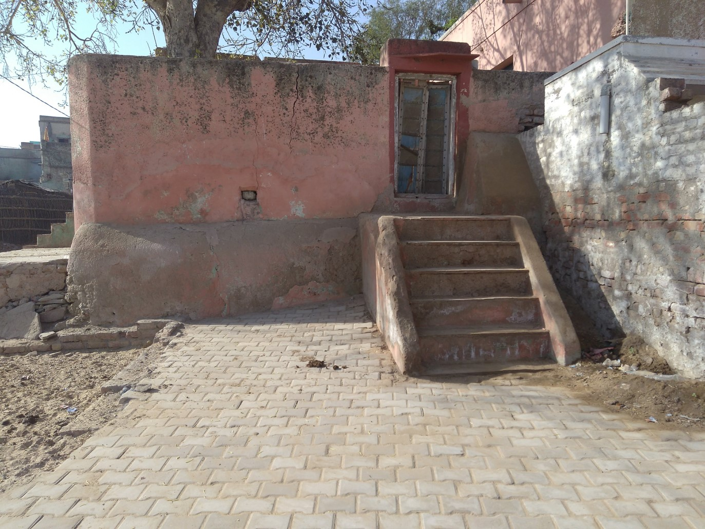

Shiva Temple
Shiva is one of the three main gods in Hinduism. Shiva is known as the destroyer god because he removes all evil from the world. His wife is the goddess Parvati. According to Hindu legend, he has a blue neck because he swallowed a poison in order to save the universe. He has three eyes, the third eye is on his forehead. Shiva is one-third of the Hindu trinity including Brahma and Vishnu. Lord Shiva lives in the Mount Kailash.
Hanuman Temple
Hanuman is one of the most popular gods of Hindus. He is also known by other names like Hanumat. His mother’s name was Anjana. Based on her mother’s name, Hanuman is sometimes called Anjaneya, that is, one born of Anjana. His father’s name was Vayu. According to Hindu mythology, Vayu is the god of winds. Hanuman’s image shows him as a strong man with the face of a monkey. He also has a tail. Hanuman was awarded boon of Immortality by Mother Sita ( Wife of Lord rama) and is still alive
Gogamedi Temple
A grand fair is held at Gogamedi in August in memory of Gogaji (a Chauhan Rajput from Dadrewa village in Churu district). The fair is held from the ninth day of the dark half of Bhaadra (Goga Navami) to the eleventh day of the dark half of the same month.
Dado-Sa Temple

Karani Mata Temple
The temple is famous for the approximately 25,000 black rats that live, and are revered, in the temple. These holy rats are called kabbas, and many people travel great distances to pay their respects. The temple draws visitors from across the country for blessings, as well as curious tourists from around the world.
Krishna Temple
Lord Krishna loved eating butter. Everyone in the town of Vrindavan was aware of his mischief and attempts to steal butter, that’s why he was called ‘Maakhan Chor’. Krishna’s mother Yashoda would tie the butter high above the ground to hide it from Krishna!
